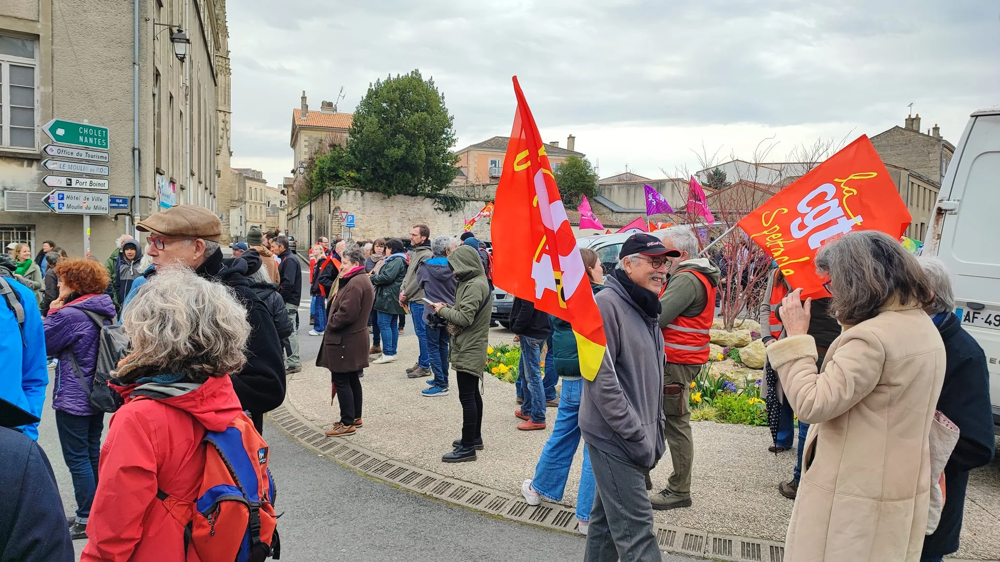
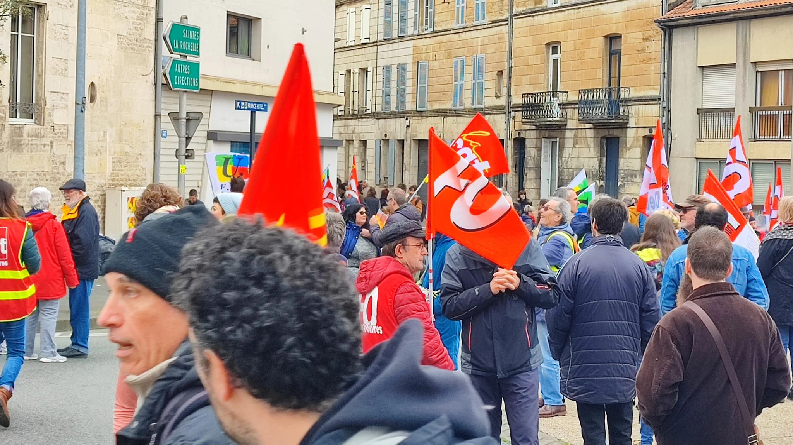
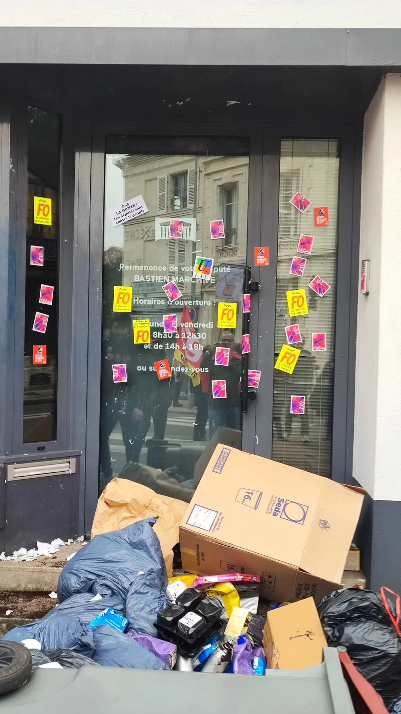
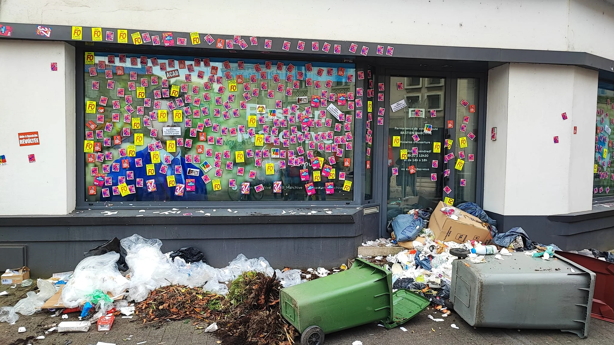
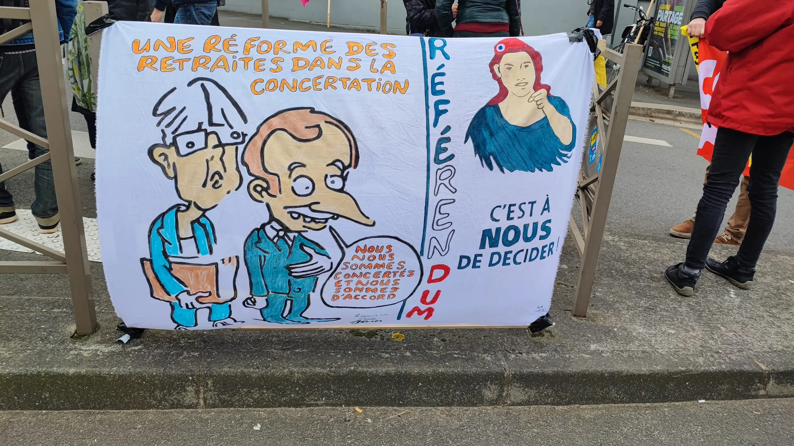
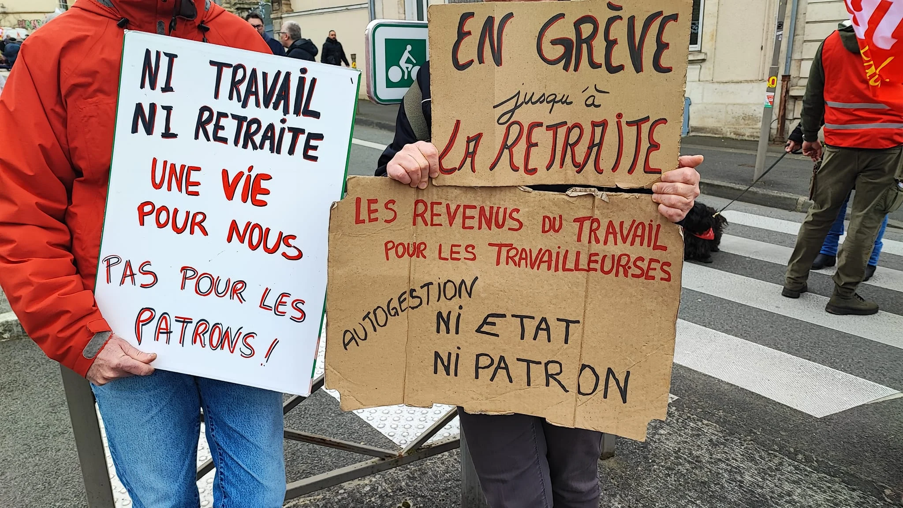
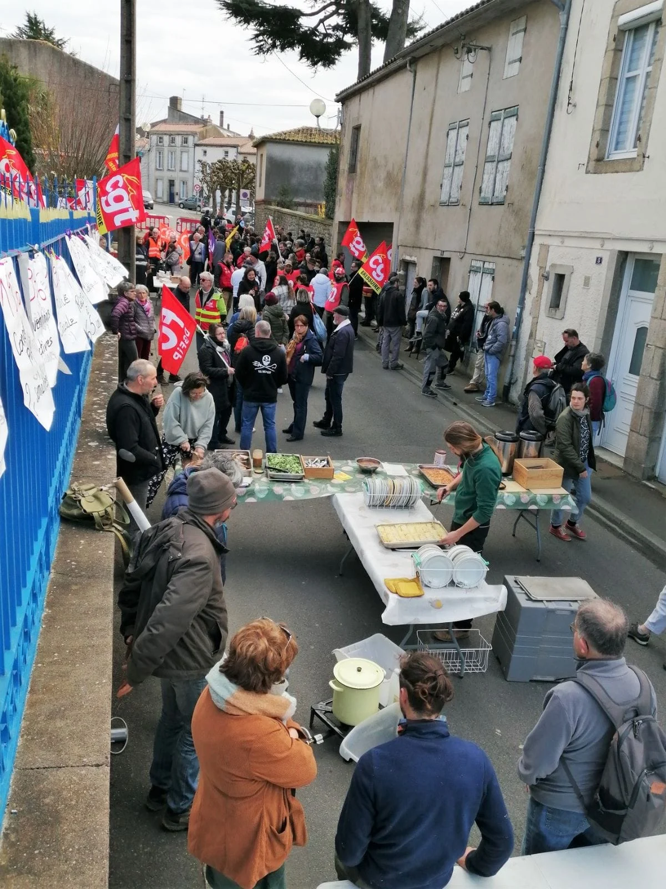

Compte rendu fédéral
À Niort, nouvelle manifestation après le recours au 49-3 sur les retraites
Date indiquée par Facebook · 17 mars 2023
Repères éditoriaux
Le 17 mars, nous avons pris part à une nouvelle manifestation. Les huit photographies accompagnent le récit publié ce matin-là.
Texte conservé avec la publication
Ce matin, nouvelle manifestation à Niort après l'utilisation du 49-3 par le gouvernement. Ce coup de force du couple Macron-Borne est un bras d'honneur au peuple.
Également un rassemblement impromptu de 120 personnes devant la sous-préfecture de Bressuire
Rassemblement à Bressuire







Sources
Archive rouge · export Facebook · AR-0002-FB-01719
À lire aussi · Bressuire. Le rassemblement du 17 mars contre le recours au 49-3 en vidéo